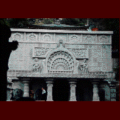

壷阪寺/奈良県高取町
西国三十三観音霊場の六番として名高い奈良の壷阪寺。ここは藤原期には高野山を凌ぐ一大伽藍を誇ったともいわれ、今でも室町時代に建てられた礼堂や三重の塔は重文になっている。しかし実際に訪れてみるとそんな長い伝統をもつ寺の雰囲気など吹っ飛ばしてくれる程、ここ壷阪寺の境内は珍な物件に溢れている。
ここ壷阪寺は3つのコンセプトを持つ。「眼の観音様」「ラベンダーのお寺」「インドとご縁のあるお寺」。
これらのテーマを具現化していくことで、この寺はどんどん珍な方向へ突き進んでいる。
まず山門をくぐり目につくのが、手書きで「目薬水祈祷」と書かれたビラ。ここ壷阪寺ではお寺オリジナル目薬をつくっているのだが、祈祷付きなのだ。しかもビラには「本日、祈祷料2割引」の文字も・・・唖然。
で、気を取り直して懸造りのお堂を登って行くと目の前に現われるのがインド風の建物、天竺渡来大石堂。インドの石工さんがつくった力作。
その横の階段を登れば回廊、三重の塔、礼堂、八角本堂と室町～江戸時代の歴史的な建造物が並ぶのだが、そこを囲むように石のレリーフが。これまたインドの石工さんが造った、釈迦一代記レリーフ。これまた力作なんだけど、完全に寺の雰囲気ブチ壊し。で、礼堂（ここはなぜか神社のように礼堂と本堂が分かれている）の前にいくと幅5�Eはあろうかという巨大な眼鏡があった。「ここを合掌しながら潜れば眼が良くなります」といった意味の貼紙が。取り敢えず潜っときました。
お釈迦さんの一生を眺めながら更に進むと今度は花畑。目の不自由な人達のための「匂いの花園」である。時期にはラベンダーが咲き誇るらしい。そして上を見上げれば20�E程の観音さまが立っている。これもインドの石工さん作。もうインドインドのてんこ盛り。
寺を一回りして御土産屋をチェックするとインドの雑貨、園芸用品、ラベンダーの線香（本日の特売品でした）、目薬、大観音のレプリカ（石造、多分インドの石工さん作）などが。もはや土産物のネタのために境内にいろんなものを造ってるとしか思えない状態。
ここの寺に来て分かったこと、その1・仏教はインド生まれの宗教だが日本の寺にはインドものは似合わない その2・宗教と商売は両立できそうだが、やっぱり何処かで破錠をきたす。
その他、鐘を鳴らすとセンサーで説法かましてくれたりする八角堂内の本尊、十一面観音や壁面がジオラマ仕立ての観音さまがおわす阿弥陀堂などこってり系のサービスが目白押しのお寺だ。
1997.9.
珍寺大道場 HOME